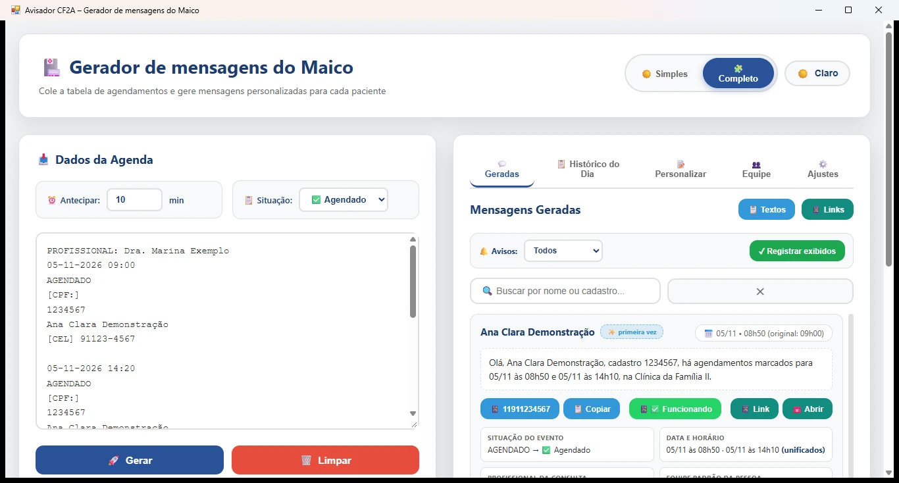
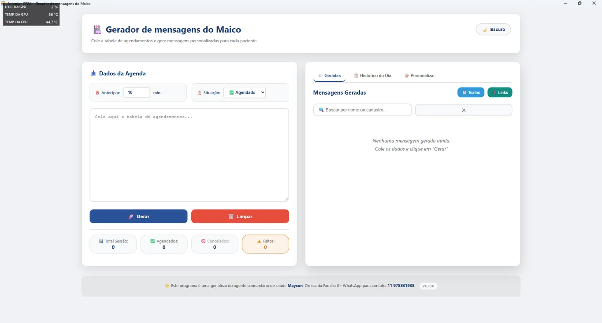
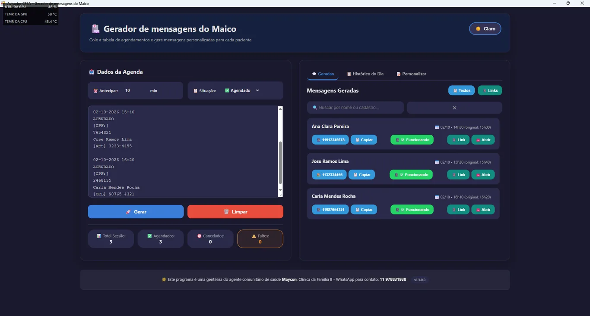
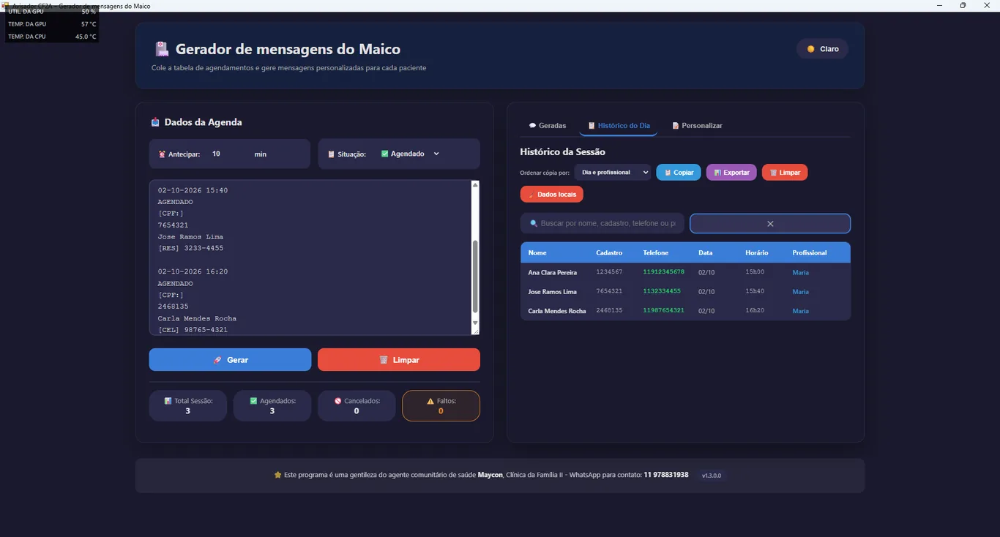
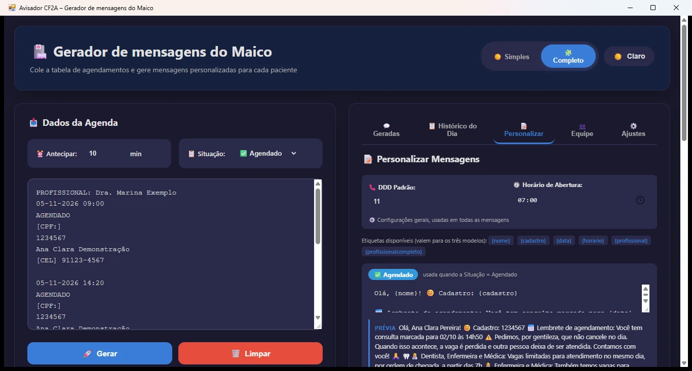
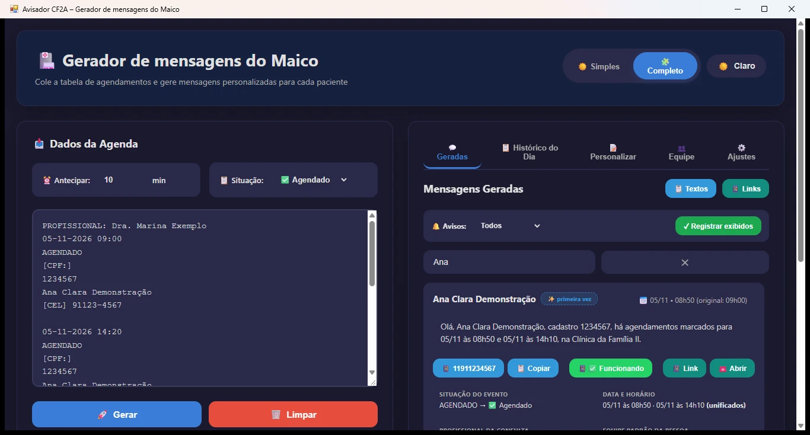

Cole a tabela de agendamentos da clínica e receba mensagens de lembrete de consulta prontas para o WhatsApp de cada paciente — com horário ajustado, histórico do dia e textos personalizáveis.

O Avisador CF2A é um programa de computador (Windows) que transforma a tabela de agendamentos da Clínica da Família em mensagens de WhatsApp de lembrete de consulta. Você cola a tabela exportada do sistema da clínica, escolhe a situação (Agendado, Cancelado ou Faltou) e o programa monta um texto por paciente, com o horário já antecipado quando necessário, o link pronto para abrir no WhatsApp e o registro de tudo no histórico do dia.
No Modo Completo (v1.4) você também vê os dados de cada evento, quem já foi avisado (✨ primeira vez ou 🔔 já avisado), a equipe responsável por cada pessoa, acumula várias agendas na fila e une os agendamentos da mesma pessoa numa única mensagem — e pode enviar SMS pelo seu próprio celular (OpenSMS), sem sair do programa.
Para quem serve: equipes de saúde que avisam pacientes por WhatsApp — agentes comunitários, recepcionistas e profissionais que precisam lembrar consultas sem digitar mensagem por mensagem.
As telas abaixo são capturas reais do aplicativo com dados fictícios de demonstração (nomes, cadastros e telefones de exemplo — nenhum paciente real).





O programa não faz nenhum cálculo clínico. Ele apenas organiza o que a tabela já diz e aplica as regras de aviso combinadas com a equipe:
| Sistema | Windows 10 e Windows 11 (versões x64 e x86). |
|---|---|
| Instalação | Microsoft Store (recomendado) ou pacote MSIX assinado para instalação local. |
| Internet | O programa funciona sem internet. A rede só é usada pelo próprio WhatsApp, no envio da mensagem. |
| Dados | Tudo fica no perfil do seu usuário, dentro do computador (%LOCALAPPDATA%). Nada é enviado a servidores, não há nuvem, analytics ou cookies. |
| Tela | Janela redimensionável, confortável a partir de aproximadamente 1100 px de largura. É um app de desktop — não é um app de celular. |
| Navegador embutido | Usa o WebView2 (runtime do Microsoft Edge já presente no Windows 11 e instalado pela Store quando necessário). |
| Limitações | Não integra automaticamente com outros sistemas; não lê arquivos de formatos inesperados; não envia mensagens sozinho — o disparo é manual, pelo WhatsApp, pelo profissional. |
O Avisador CF2A não coleta dados. Não há login, conta, nuvem nem integração com Google Drive ou OAuth. Tudo o que você digita ou cola (agenda, nomes, telefones, histórico e configurações) permanece no seu computador e é apagado pelos botões internos do app ou na desinstalação. Não usamos cookies, analytics, rastreamento ou publicidade.
Você é o titular dos dados e pode acessá-los, corrigi-los ou excluílos a qualquer momento pelo próprio programa. Os detalhes estão na Política de Privacidade.
Não. O app roda 100% offline. A internet entra apenas no envio da mensagem pelo WhatsApp, que é aberto pelo próprio botão do cartão.
Não. Nada sai do seu computador: não há nuvem, login nem telemetria. Os dados ficam no perfil local do Windows e são apagados pelos botões do app ou na desinstalação.
Sim, desde que o texto tenha os campos de sempre (data, situação, cadastro, nome e telefone). Cole a tabela como texto puro na área indicada e clique em Gerar. Se a formatação da sua unidade for muito diferente, revise cada mensagem antes de enviar.
Use o botão 📱❌ "Não funcionou" no cartão: a marcação fica guardada no histórico e nos próximos avisos você já sabe quem precisa de outro canal de contato.
Sim. Na aba Personalizar você edita os modelos de Agendado, Cancelado e Faltou, define DDD padrão e horário de abertura, com prévia ao vivo de como a mensagem fica.
Sim: a demonstração tem validade de 1 mês a partir da primeira instalação. Para continuar usando, fale com o desenvolvedor (mmr05@hotmail.com ou WhatsApp 11 978831938) sobre o licenciamento.
Avisador CF2A is a free Windows desktop tool that turns a clinic's appointment table into ready-to-send WhatsApp reminder messages for each patient. Paste the schedule, pick the status (booked, cancelled or missed), and the app prepares one message per patient with the appointment time shifted forward when needed, a direct WhatsApp link and a daily history with search and CSV export. It runs fully offline: no account, no cloud, no tracking — all data stays in the local user profile on your own PC. It is an independent decision-support helper, not an official health system, medical record or medical device, and it does not replace a qualified professional's assessment. Contact: mmr05@hotmail.com.